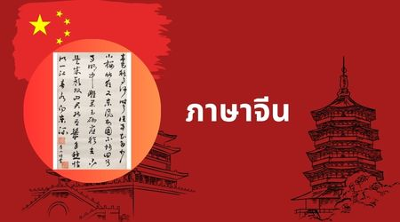

ภาษาจีน
ภาษาจีน (汉语 - Hànyǔ) เป็นภาษากลุ่มจีน-ทิเบตที่มีผู้พูดมากที่สุดในโลกและมีระบบเสียงวรรณยุกต์ พินอิน (Pinyin): ระบบการถอดเสียงภาษาจีนเป็นอักษรโรมัน เพื่อช่วยในการอ่านออกเสียงเสียงวรรณยุกต์: ภาษาจีนกลางมี 4 เสียงหลัก และ 1 เสียงเบาอักษรจีน: แบ่งเป็นอักษรจีนตัวย่อ (ใช้ในจีนแผ่นดินใหญ่) และอักษรจีนตัวเต็ม (ใช้ในไต้หวันและฮ่องกง)